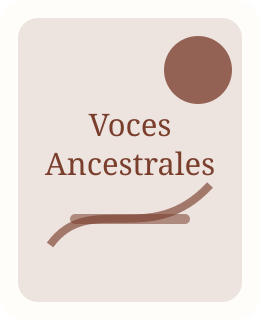
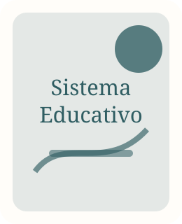
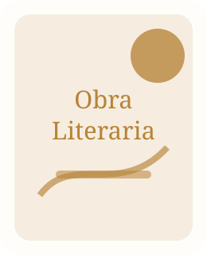
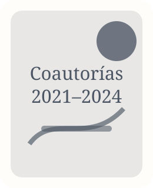

Books · Papers · Working papers
Publicaciones
Portafolio editorial organizado en fichas académicas. La estructura permite incorporar enlaces a PDF, datos, reseñas, DOI, ISBN o materiales complementarios.

Voces Ancestrales de la Educación
Tesis / investigación · 2024
Título completo: Voces Ancestrales de la Educación: hacia un nuevo paradigma desde el enfoque de la sabiduría de los pueblos originarios del Oriente boliviano para la transformación educativa.
Uso web: convertir esta investigación en página propia con resumen, objetivos, método, contribución y próximos productos.

Sobreviviendo al Sistema Educativo
Libro · 2020
Obra que puede funcionar como antecedente de su línea de investigación sobre crisis, experiencia educativa, transformación personal y crítica del sistema educativo.

La Muerte fue la Liberación
Libro · 2017
Obra testimonial y literaria. En la web académica se recomienda ubicarla como antecedente editorial, no como eje principal de investigación.

Coautorías y capítulos colectivos
2021–2024
Participación en libros colectivos internacionales sobre liderazgo, emprendimiento, superación personal y escritura. Se recomienda depurar esta sección: conservar solo publicaciones con ISBN, ficha editorial verificable y relación clara con educación, liderazgo o investigación.
Próximos productos sugeridos
- Artículo académico: “Educación intercultural como política pública en Bolivia: desafíos para una agenda de Estado”.
- Documento de trabajo: “Saberes ancestrales, currículo y transformación educativa en el Oriente boliviano”.
- Ensayo de divulgación: “¿Qué puede aprender la escuela boliviana de las voces comunitarias?”.